关键词为“痛”的文章
1-
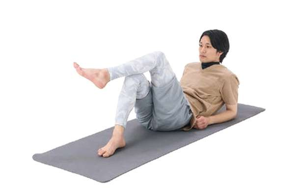
低压扰乱自主神经，浑身不舒服…… 发布日期：导致寒冷和肿胀。每天1分钟护理缓解小腿僵硬【物理疗法...
-
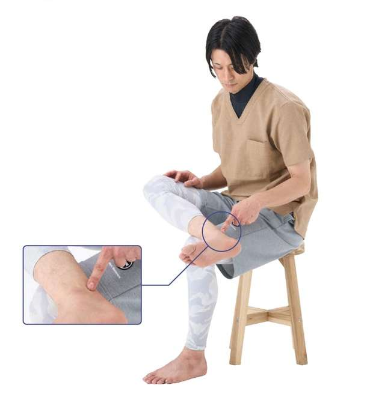
低压扰乱自主神经，浑身不舒服…… 发布日期：如果脚踝僵硬，可能会导致膝盖和臀部疼痛，以及下背部疼痛。想要放松...
-
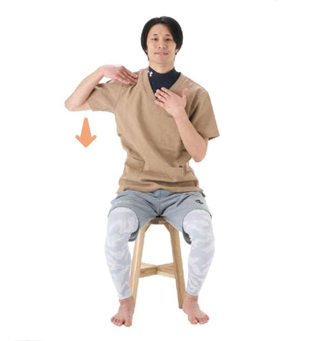
低压扰乱自主神经，浑身不舒服…… 发布日期：“锁骨练习”[1 由物理治疗师教授]可缓解转动肩膀时感到的疼痛和沉重......
-
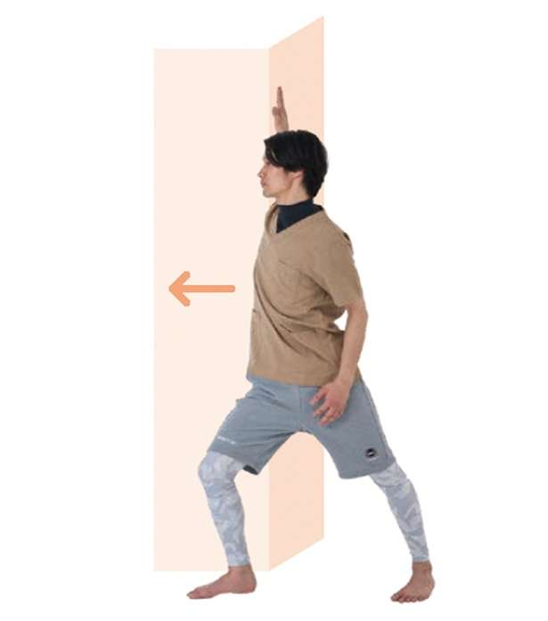
低压扰乱自主神经，浑身不舒服…… 发布日期：肩膀周围的许多问题都根源于肩胛骨。物理治疗师教导“我的手臂是伸直的......”
-
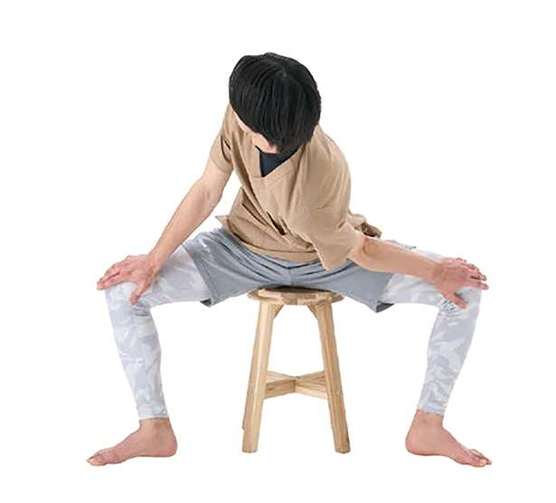
低压扰乱自主神经，浑身不舒服…… 发布日期：伸展大腿内侧，消除膝盖、脚踝问题！每天一分钟，会改变你站立时的姿势......
-
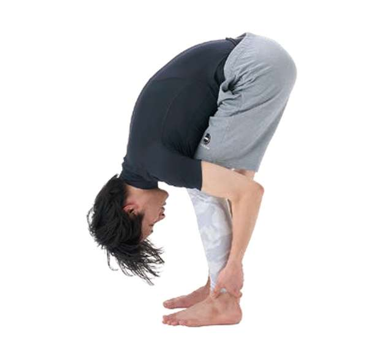
低压扰乱自主神经，浑身不舒服…… 发布日期：【大腿灵活性检查】每天1分钟！向前弯腰，伸展膝盖，行走平稳……
-
 低压扰乱自主神经，浑身不舒服…… 发布日期：
低压扰乱自主神经，浑身不舒服…… 发布日期：改变只需1分钟！背部伸展让你早上感觉身体更轻松【物理治疗...
-
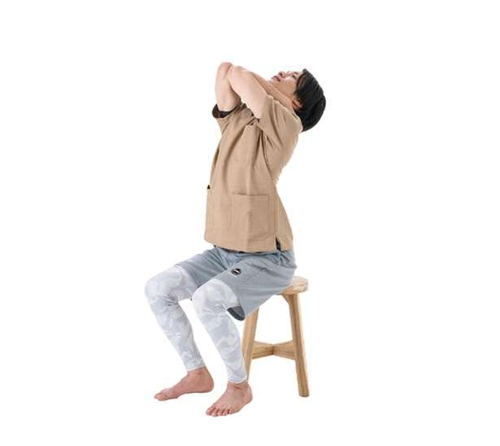
低压扰乱自主神经，浑身不舒服…… 发布日期：“手机颈”的原因不是脖子！每天一分钟护理，恢复原来姿势【物理治疗...
-
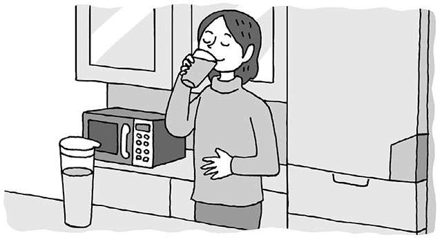
低压扰乱自主神经，浑身不舒服…… 发布日期：避免“胃部不适”的生活习惯。从胃部沉重和胃痛的症状中可以发现胃癌......
-
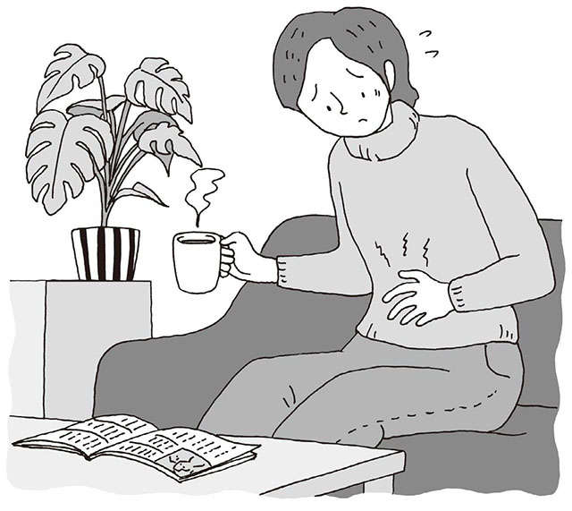
低压扰乱自主神经，浑身不舒服…… 发布日期：难道是“反流性食管炎”或者“功能性消化不良”？一项不会忽视胃部不适的服务......
-
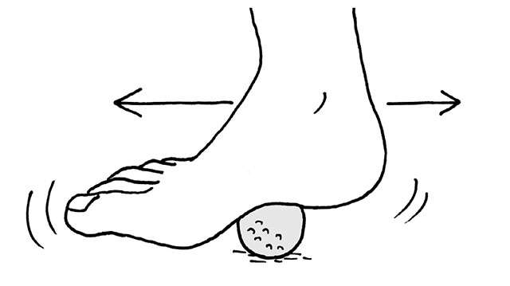
低压扰乱自主神经，浑身不舒服…… 发布日期：持续行走困难会导致身体和精神虚弱...强调预防脚底疼痛...
-
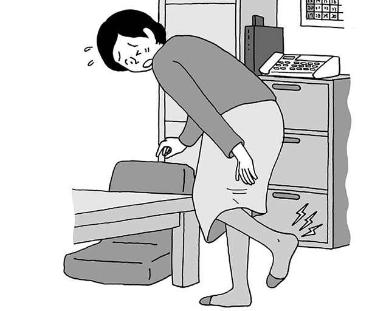
低压扰乱自主神经，浑身不舒服…… 发布日期：原因是由于衰老和脚趾使用方式导致肌肉无力！ “脚底痛”自检